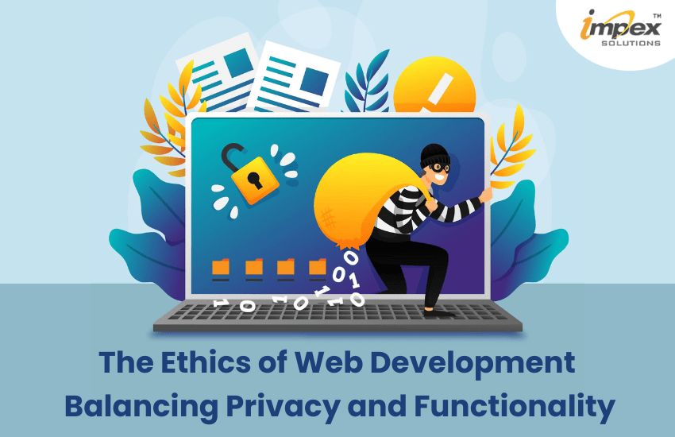

Image

Image by ImpexSolutions
Youtube Video
Video by GoDaddy Pro on YouTube
This video explores the importance of ethics in coding and web development, highlighting the responsibility developers have when creating digital experiences. It discusses key ethical considerations such as accessibility, user privacy, and the proper use of third-party resources, emphasizing the trust clients and users place in developers to build secure, inclusive, and reliable websites.
Article
This article explains the importance of ethics in web design and development, emphasizing how developers must create websites that are fair, safe, and respectful for all users. It highlights key principles such as protecting user privacy, ensuring accessibility, and being transparent about data usage, which help build trust between users and websites.
Ethical Issue(s) Around Web Development
Ethical issues in web development focus on how developers create websites responsibly, ensuring they are fair, safe, and respectful to users. Areas such as user privacy, giving credit to original creators, and security are all ethics in web development.